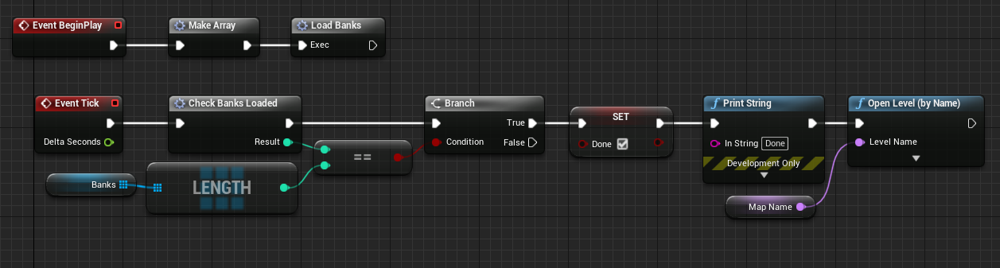
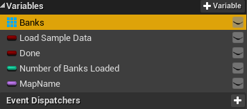

Unreal Integration 2.02
This is an Unreal Level Blueprint that demonstrates how to build a loading screen that can be used at the start of a game to load both FMOD Studio data and Unreal data without blocking the main thread. To make this work properly "Load All Banks" needs to be turned off in the FMOD Settings.

Topics:

Load All Banks is also disabledEvent Begin, uses the Load Sample Data variable for the Load Bank node.Done variable every tick. If it is still false, it will iterate through the array of banks incrementing the variable Number of Loaded Banks. Once Number of Loaded Banks is equal to the total number of banks in the array then the variable Done is set to true, and it is safe to load the playable Map.